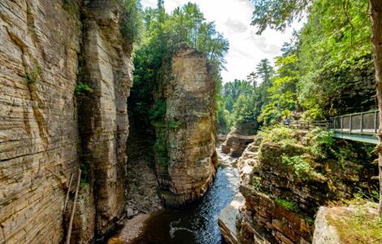

NATIONAL GEOGRAPHIC
This New York State rail trail isn’t just epic it’s also accessible
TRAVEL
- 
“No bike trail parking” reads the sign, hand-painted in spindly letters on a red barn in pastoral North Chatham, New York. On a Tuesday morning, off a side street few would think to plant a car on, the Empire State Trail (EST) is quiet, save for the distant lowing of cows and a chestnut mare who lifts her head to snort at a passing jogger.
Measuring 750 miles, the EST, a T-shaped path linking New York City to the Adirondacks, and Albany to Buffalo, is the longest multi-use rail trail in the United States. It’s emblematic of the state’s push to encourage residents to get outdoors and improve their health. The trail also aims to reconnect communities, many in rural areas which have become increasingly isolated.
According to Andy Beers, director of the EST, the $200 million project which secured another $93 million in grant funding after New York Governor Andrew Cuomo championed it in 2017 is “the single largest state investment in trails anywhere in the country.”
It’s also inextricably linked with rail history. Once the lifeblood of New York State, railroads drove economic and community growth through the Industrial era, mainly during the 1800s in the U.S. Following the proliferation of the automobile in the early 20th century, many railroads folded.
In 1920, New York State boasted 8,400 miles of railway. Today, only 3,500 miles remain. Of the numerous abandoned corridors, Beers says, “They’ve been sitting there, unpolished gems in the woods, for decades. Now there’s this great energy and enthusiasm for reclaiming and repurposing them.”
Enthusiasm spiked last year; the Rails-to-Trails Conservancy reported a 200 percent increase in national rail-trail usage early in the coronavirus pandemic. Since then, rates have consistently been 60 percent higher than in previous years.
The EST four years in the building, and longer in the planning was completed, fortuitously, in December 2020. A shrewd co-branding exercise, it stitches together 20 regional trails into a continuous, year-round corridor for walkers, cyclists, hikers, and cross-country skiers. Ten feet wide and gently graded, it’s also ADA compliant, a rarity in rural areas.
The trail is divided into three main segments, with the state capital, Albany, in the center. It sweeps through many of the state’s iconic landscapes, from the historic river towns of the Hudson Valley to the Catskill Mountains, the manicured cities of the Erie Canalway, and the shrouded old-growth forests of the Adirondacks. Trailheads and parking are well marked, some with signage detailing town history, and easily identified on the Empire State Trail website.
At 350 miles, the Erie Canalway Trail is the EST’s longest segment. Starting in Buffalo, it follows portions of the original Erie Canal, which revolutionized life in 1800s America. Along this leg, riders and walkers encounter historic features like lift bridges and the Flight of Five locks, an engineering marvel constructed to heft boats over the Niagara Escarpment the same rushing waterway that plunges 180 feet over a cliff at Niagara Falls.
The trail also passes 800-acre Genesee Valley Park in Rochester, designed by Frederick Law Olmsted. Additionally, several sites significant to the Underground Railroad, which made extensive use of New York’s canal systems, are close to the route.
Just 300 feet from the trail in Albany, Nine Pin Cider was founded in 2013 by Alejandro del Peral. It’s the first cidery in New York since Prohibition and one of many players in the state’s robust craft beverage movement. Its tasting room seems ideally positioned to reap the economic benefits from some of the 8.6 million visitors projected to use the trail this year.
Del Peral believes the EST is good for more than just boosting his business. “It’s an exploration of the cultural centers of these small upstate New York towns that have all this history,” he says.
Points north: Champlain Valley Trail
Stellar Hudson River views headline as the EST heads north from Albany along the 10-mile Mohawk Hudson Bike-Hike Trail to Peebles Island State Park. Located at the confluence of the Hudson and Mohawk rivers, the park offers hiking with memorable water vistas.
From here, the EST parallels several towns that were strategic during the French and Indian and Revolutionary wars. The most famous: Ticonderoga, home of the star-shaped Fort Ticonderoga, captured by forces under Ethan Allen and Benedict Arnold in 1775.
Comments :
- john Very good
- john Very good
Leave a Reply
Your email address will not be published. Required fields are marked*
Related posts:
-
 Dyeing poison frog
Dyeing poison frogOne of the most recognizable frogs in the world, the dyeing poison frog is a species of poison frog. It’s known for its vibrantly colored skin yellow on its back and blue on its legs and its size. It can grow up to two inches long
View article -
 Northern snakehead
Northern snakeheadThe northern snakehead (Channa argus) has a most unusual ability: It can breathe outside of the water, as well as within. Juveniles can also wriggle their long, narrow bodies onto land, enabling them to travel from one pond
View article -
Flatfishes
No misnomers here. Flatfish are exactly what they sound like: fish with thin, oval or diamond-shaped bodies that are lie flat on the seafloor.
View article